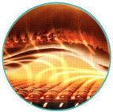
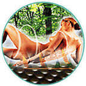

The Tourmanium stone is composed of the semi-precious stone Tourmaline, Germanium, volcanic rock, and elvan rock.
When the Tourmanium stone turned on, it emit the warm heat of Far-Infrared Rays deep into the body,stimulating blood circulation and cell activity in the exposed body area.
The Tourmanium stone also naturally emit healthy Anions due to its Tourmaline and Germanium composition.
Environment-friendly / human-friendly materials used ,The special copper fiber with high corrosion and shatter resistance shields electromagnetic waves, and the natural palm used inhibits mat deformation and gives antifungal, mothproof, moisture-proof and deodorant effects.
Product Features

FAR INFRARED RAYS(FIR)
FIR is emitted from the Sun and from our human body in nature. FIR is non-invasive, but reaches deep into
the nerves and muscles, providing deep heat therapy and many other health benefits.
It boosts the body's healing ability by increasing the metabolism and immune system, helping to detoxify the blood
and also promotes weight loss.

ANIONS
Anions are the negatively charged Ions which are abundant in nature, such places include mountains,
forests and under waterfalls.
Anions help to relax, refresh and rejuvenate the human body.
It helps you to recover faster from exhaustion and fatigue, calm the mind and normalizes the body.